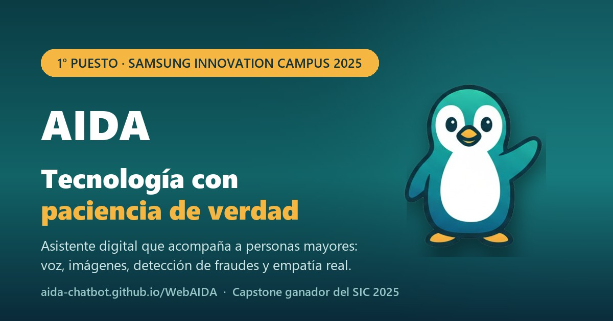

Conversación natural
Preguntá como le preguntarías a una persona. AIDA entiende el contexto, recuerda de qué venían hablando (la charla sigue aunque cierres la aplicación) y responde sin vueltas.
AIDA es un asistente conversacional pensado para que nadie quede afuera del mundo digital. Es una burbuja que queda en la pantalla del celular: la tocás, le preguntás y te dice en voz alta qué tocar, sin apurar a nadie.
¿Qué es AIDA?
AIDA nació de una pregunta concreta: ¿cómo ayudamos a alguien que nunca usó un smartphone sin que se sienta perdido, apurado ni tratado como un chico? La respuesta fue un asistente con la paciencia que a veces nosotros no tenemos.
Es una aplicación para Android que deja una burbuja con la cara del pingüino sobre la pantalla. Se maneja con un toque y la voz, o escribiendo. No hay menús raros ni pasos que memorizar.
Detrás hay un sistema modular de inteligencia artificial. Adelante hay una sola cosa: alguien que responde bien, las veces que haga falta.
Frases cortas, sin tecnicismos y con ejemplos. Si algo no se entendió, lo vuelve a explicar de otra manera.
Se puede preguntar lo mismo diez veces. AIDA responde igual de bien la décima que la primera.
Te ayuda a saber si un mensaje es seguro, sin asustarte, y no ve nada en las aplicaciones de banco.
Habla en castellano de todos los días, sin apuro, y se ajusta a lo que te resulta más cómodo.
Funciones
Cada función resuelve un problema real del día a día con la tecnología. Ninguna está para lucirse: todas están para que la persona pueda seguir sola.
Preguntá como le preguntarías a una persona. AIDA entiende el contexto, recuerda de qué venían hablando (la charla sigue aunque cierres la aplicación) y responde sin vueltas.
Hablale y AIDA te entiende. Te contesta con voz, a la velocidad que elijas, y si estás en un lugar con ruido o en silencio, también puede contestar por escrito.
Cuando la tocás, AIDA ve lo que tenés adelante, lee el texto que aparece y te lo explica en palabras simples. También puede mirar una foto que elijas.
¿Un mensaje raro, un premio inesperado, alguien que pide un código? Pegalo en AIDA y te dice qué le llama la atención y qué conviene hacer. Y si querés, te avisa sola en el momento en que llega.
Letra y burbuja grandes, vibración y un anillo más grueso para marcar dónde tocar. Funciona también con TalkBack.
Una lista de números a mano. Tocás uno y se abre el marcador con el número puesto, sin llamar hasta que vos lo decidas.
Unas pocas preguntas, de a una por pantalla, ayudan a AIDA a conocer el nivel de autonomía, los intereses y el entorno de cada persona.
Guías cotidianas paso a paso, el significado de las palabras del celular y más de 35 preguntas frecuentes ya resueltas, para leer sin necesidad de preguntarle a nadie.
AIDA escucha, habla y contesta en el idioma que tiene el celular. No hay nada que configurar.
Cómo funciona
Se configura una sola vez, y después alcanza con tocar la burbuja.
Al abrirla por primera vez te guía paso a paso, un permiso por pantalla, y la burbuja queda puesta.
AIDA hace unas preguntas breves para conocerte: cómo te llamás, qué te interesa y cómo preferís que te responda.
Tocás la burbuja y hablás, o le escribís. Todas las veces que necesites, sin que nadie se impaciente.
Ajusta cómo te habla según lo que le contaste de vos, para que cada conversación sea más fácil.
App para Android
AIDA es una aplicación para celulares Android. Se queda en la pantalla como una burbuja con la cara del pingüino: la tocás mientras usás cualquier aplicación (mensajes, el correo o lo que sea), le preguntás, y mira lo que tenés adelante para decirte qué tocar. En voz alta.
Se configura una sola vez. La primera vez que se abre guía paso a paso, un permiso por pantalla y explicando para qué sirve cada uno. Está pensada para que la deje lista un hijo, una hija o un nieto, y que después no haya que volver a tocar nada.
Todavía no está en Google Play. La estamos probando en teléfonos reales antes de publicarla. Si te anotás en la lista de espera, te avisamos el día que salga.
Queda en un costado de la pantalla, encima de cualquier aplicación. Se arrastra para correrla de lugar, y llevándola hasta la equis se saca.
Cuando la tocás, ve lo que tenés adelante y te dice qué tocar con las palabras que usás vos: «el avioncito», no «el botón Enviar».
Con voz y a la velocidad que elijas. Si el teléfono está en silencio, te avisa y te muestra la respuesta escrita.
Para las preguntas que no son sobre la pantalla: le escribís o le hablás, y la conversación sigue donde había quedado.
Si el teléfono se apaga, la burbuja vuelve con un solo toque, sin tener que abrir la aplicación ni buscar nada.
La letra y la burbuja se agrandan en cuatro pasos cada una. Y se puede elegir entre modo claro y modo oscuro.
¿Te llegó un mensaje raro? Abrilo, tocá la burbuja y preguntale si es de verdad. Te dice qué le llama la atención, sin asustarte.
En las aplicaciones de banco y billeteras AIDA no ve nada, a propósito. Y las imágenes de tu pantalla no se guardan en ningún lado.
¿Para quién?
Para quienes quieren manejarse solos con la tecnología, a su ritmo, sin que nadie los apure ni los haga sentir mal por preguntar.
Para quienes quieren que su familiar tenga respaldo tecnológico sin depender de una llamada cada vez que aparece una duda.
En movimiento
El video de presentación con el que AIDA se llevó el primer puesto: la idea, el problema que resuelve y cómo se usa.

Reconocimiento
AIDA fue elegido el gran ganador del Capstone Project en la edición del Samsung Innovation Campus Argentina especializada en Inteligencia Artificial: meses de formación intensiva y trabajo en equipo para transformar una idea en tecnología que funciona.
«Nos llevamos a casa no solo el primer premio, sino el orgullo de haber creado una solución
con impacto social real, compitiendo contra otros grandes proyectos.»
— Santiago Oroz, en nombre del equipo

El equipo de AIDA, en versión pingüino, festejando el primer puesto.
Estado del proyecto
Preferimos contar lo que hay antes que prometer lo que falta. Este cuadro se actualiza a medida que avanzamos.
El primer producto, que funcionó y con el que se ganó la competición de Samsung.
Presentación final, defensa ante el jurado y primer premio del certamen nacional.
La burbuja que acompaña en cualquier aplicación. La estamos probando en teléfonos reales antes de publicarla en Google Play.
Todavía no hay fecha. Quienes estén en la lista de espera se enteran primero.
Configurar contactos de confianza y preferencias desde afuera de la aplicación.
Equipo
Tres estudiantes del Samsung Innovation Campus con un objetivo compartido: que la tecnología no deje a nadie afuera. No hubo roles separados: los tres hicimos de todo, del código a la presentación final.
Gracias
Por sostener un programa que forma talento joven y lo desafía con problemas reales.
Por acompañar la edición 2025 del Samsung Innovation Campus en Argentina.
Por el espacio de aprendizaje y por su compromiso con la inclusión digital.
Por la mentoría, la paciencia y las herramientas para llevar la idea a la realidad.
Con referentes de Randstad y Streambe, por devoluciones que mejoraron el proyecto.
Por desafiarnos siempre a ir más allá del código.
Preguntas frecuentes
AIDA (Asistente Digital Unificado) es un asistente con inteligencia artificial pensado para adultos mayores con poca experiencia en tecnología. Es una aplicación para Android: una burbuja que queda encima de cualquier otra aplicación. La tocás, le preguntás hablando o escribiendo, mira lo que tenés en la pantalla y te contesta en voz alta, en palabras simples. También te ayuda a saber si un mensaje es seguro. La hicimos en Argentina y ganó el primer puesto del Samsung Innovation Campus 2025.
Está hecha para alguien mayor que no se lleva bien con la tecnología, y todo sale de ahí. Contesta sin tecnicismos y en pasos cortos, te contesta en voz alta, mira lo que tenés en la pantalla para decirte qué tocar, tiene guías ya revisadas para las dudas más comunes del celular y te ayuda a saber si un mensaje es seguro.
Todavía no está abierto al público y preferimos no dar una fecha que después no podamos cumplir. Si dejás tu correo en la lista de espera, sos de las primeras personas en enterarte.
No. Se configura una sola vez, un permiso por pantalla y explicando para qué sirve cada uno (está pensada para que la deje lista un hijo, una hija o un nieto). Después alcanza con tocar la burbuja y hablarle.
Todavía lo estamos definiendo, y preferimos no tirar un número que después no podamos sostener. Lo que sí sabemos: va a haber una manera de usar AIDA sin pagar nada, y algunas cosas van a tener un costo, porque mantener el servicio andando todos los días cuesta plata. Cuando esté decidido, lo vas a leer acá.
La conversación y el perfil se guardan en tu teléfono, y los borrás desde Ajustes. Cuando le preguntás algo, el texto de la pregunta y lo que ve de tu pantalla pasan por un servidor de AIDA, que los reenvía a Groq, el servicio que genera la respuesta, y no los guarda; la imagen no se guarda en ningún lado. En las aplicaciones de banco y billeteras AIDA no ve nada. No se venden ni se comparten con terceros.
Está todo detallado en la política de privacidad.
No, y no quiere hacerlo. AIDA acompaña en el uso de la tecnología y no da diagnósticos médicos ni asesoramiento financiero. Ante una emergencia hay que llamar a los servicios de emergencia.
En celulares Android (Android 11 o más nuevo). Es una aplicación con una burbuja que acompaña dentro de cualquier otra aplicación. Todavía no está en Google Play y no tiene fecha de salida.
Por ahora no. En el iPhone ninguna aplicación puede quedarse encima de otra ni ver lo que muestra otra aplicación: es una regla de Apple, no algo que podamos resolver nosotros. AIDA es solo para Android.
Santiago Oroz, Renata Berho y Milagros Argañin, como trabajo final del Samsung Innovation Campus Argentina 2025, en la edición dedicada a inteligencia artificial. El proyecto, un asistente en Telegram, ganó el primer puesto del Capstone Project; hoy el equipo desarrolla la app para Android.
Sí, nos interesa mucho. Escribinos a aidaassistantbot@gmail.com y contanos en qué contexto trabajan.

Lista de espera
Estamos terminando de prepararla. Dejá tu correo y te escribimos cuando puedas usarla. Sin spam ni newsletters: un solo mensaje, cuando haya novedades de verdad.